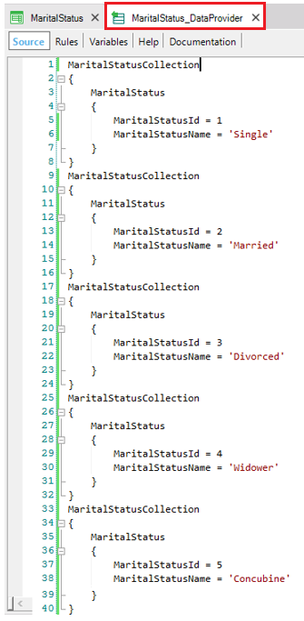
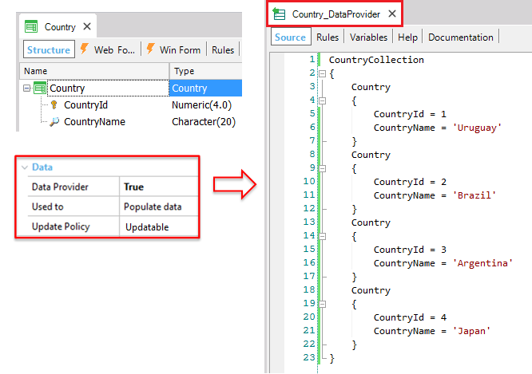

Sets whether the Transaction will allow editing attribute values or not. Besides, if the Transaction has associated table(s), the "Read Only" value will not allow updating those tables through Procedures or other objects. Values
Scope Objects: Transaction Run-time/Design-timeThis property applies only at design-time. Samples
1) Consider the following Transaction object: MaritalStatus Suppose its Data Provider property = True and its Used to property = Populate data (the Data Provider's purpose is to populate). Thus, the Data Provider stores all the necessary data in the MaritalStatus physical table (as shown in the following image) and the objective is to keep those values unchanged:  To this end, you have to set the Transaction Update Policy property to Read-Only. Thus, the attribute values will not be able to be updated by end users (because the Transaction form behavior will be read-only) nor by you through GeneXus objects.

3) See the following example that uses this property to implement Dynamic Transactions that update data.
4) Suppose a Transaction object with an associated Data View. If you want to be able to read the external table, but not to allow updating it (because it is done via API -referenced module or services-), you can set the Update Policy property to Read Only. AvailabilityThis property is available since GeneXus 15. |
| Backlinks | |
| Dynamic Transactions that update data | Specification Codes from spc0150 onwards |